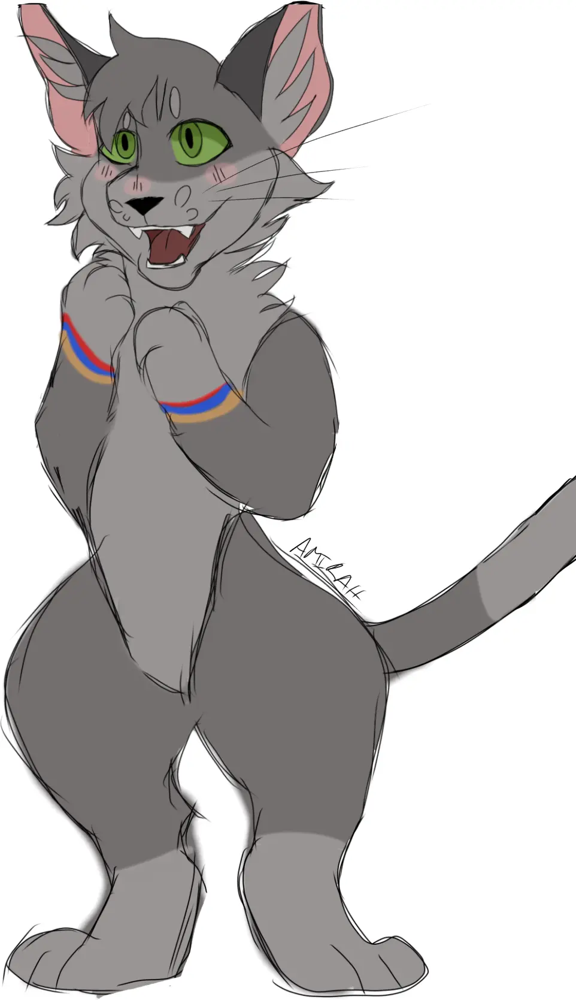

Who is Katty?
Katty, or Katty The Gray Tabby Cat, is the name of my fursona, a gray tabby cat with emerald green eyes. —
In addition to being my fursona, Katty is also my mascot and flagship icon.
Katty is intended to be an (almost) always happy character with a bubbly personality, and a drive
to accomplish their goals.

Test